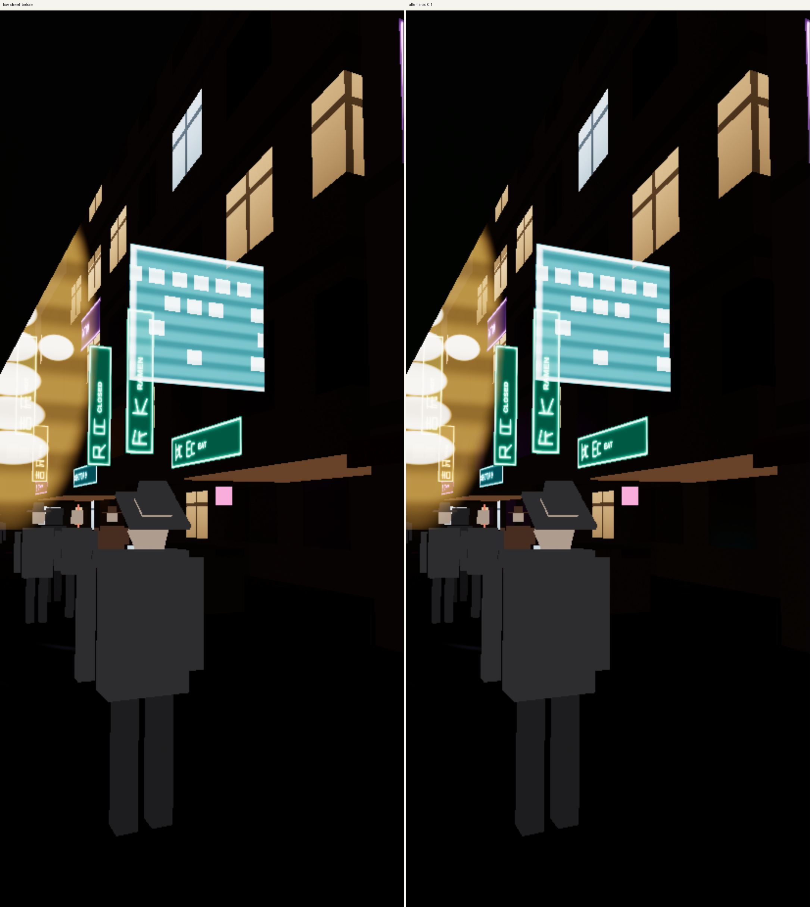
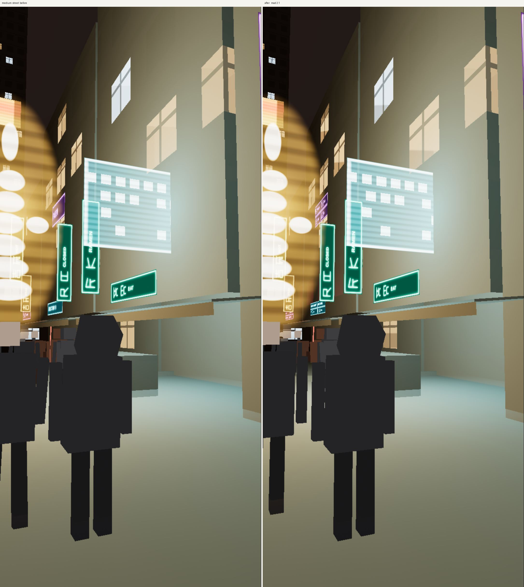
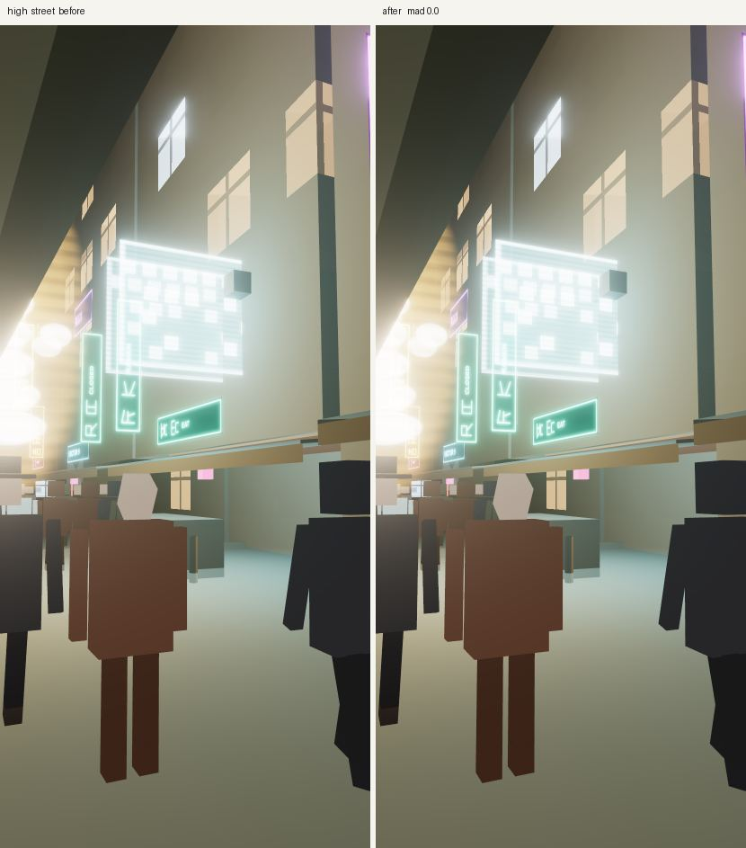
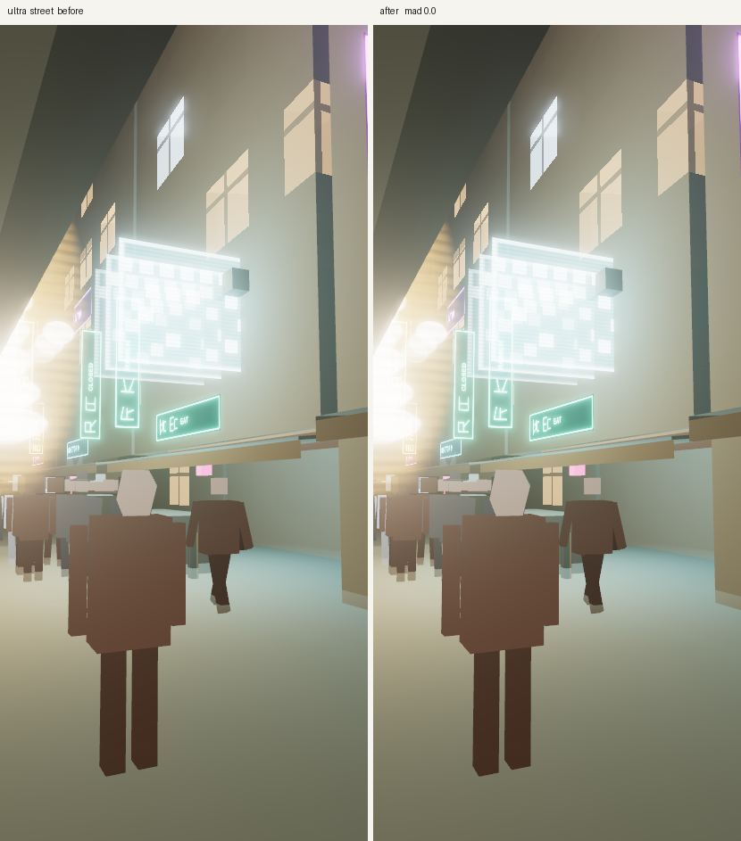
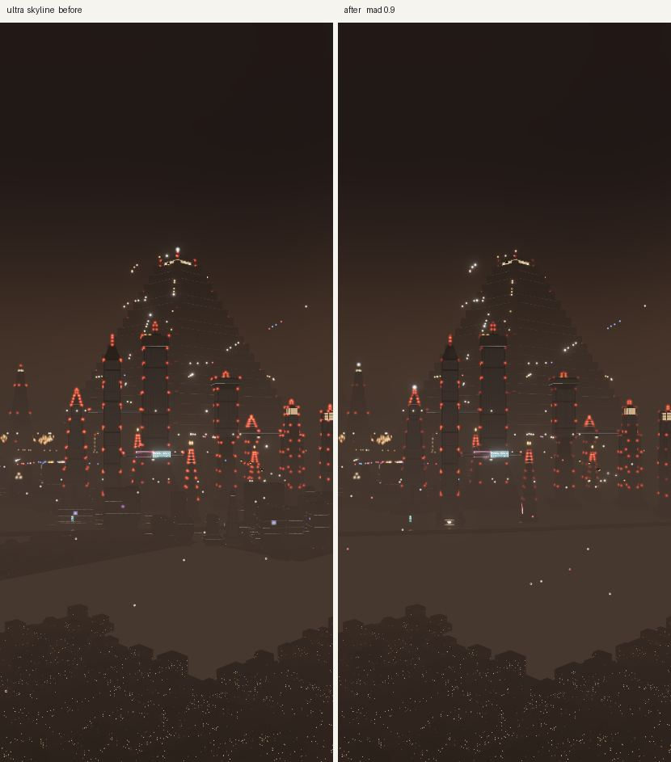
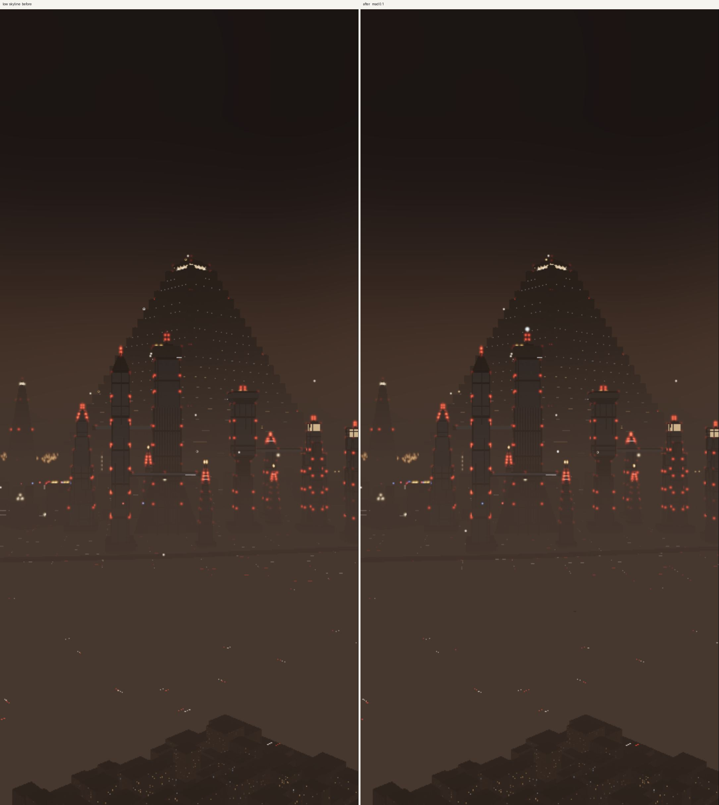
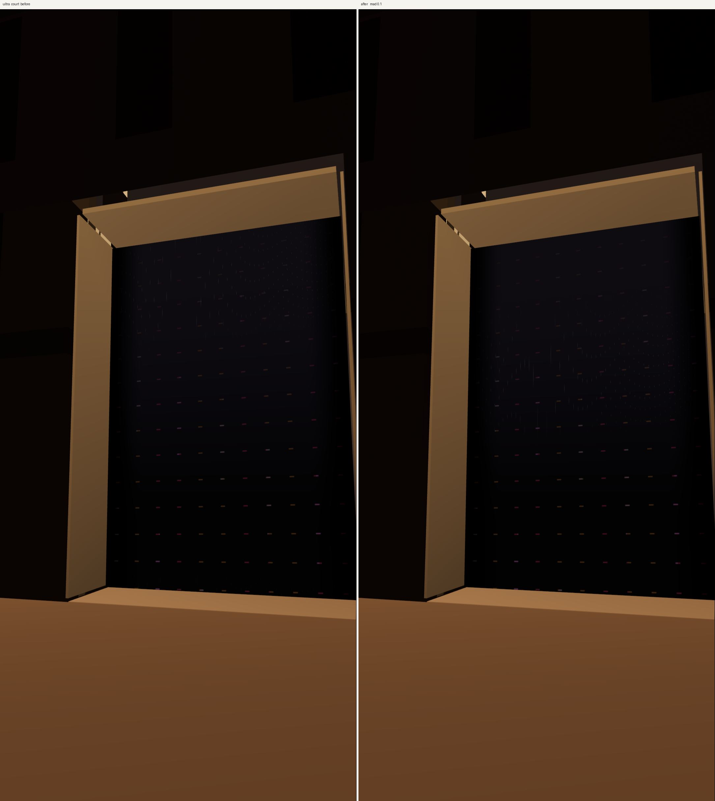

Memory pass, 11 October 2026
The phone was killing the tab, including on Low. This pass separates the graphics tier (how good the picture looks) from a memory budget (how much stays resident), then measures a scripted route on every tier under a simulated Android tab.
Rules for every later pass: MEMORY-RULES.html.
What changed
- Device budget from
navigator.deviceMemory, WebGL limits, user-agent hints, and a 1 MB startup probe. Android defaults sit between 600 and 900 MB for the whole tab. Desktop is 2–4 GB. - A resource registry with reference counts, dispose-on-last-release, and an LRU sweep of unreferenced evictable resources.
?memguard=1throws if something is constructed outside it. CI runsnpm run memory:check. - Screen-space-error LOD with 18% hysteresis, one step per update. Radii shrink the horizon first. A ready queue keeps the 12 nearest results out of 16.
- KTX2 atlases on phones that can decode them, with no uncompressed twin. High mips drop when the camera climbs or the governor asks.
- Shared sign quad, shared city and sign materials. Impostor blocks for 2 km cells the budget did not admit.
- A governor that, before the tab dies, drops far detail, then mips, then resolution, and recovers when there is headroom.
- Interiors build on approach and dispose on leave. An occluded interior unloads exterior chunks.
- Landmark LODs release GPU buffers for levels that are not showing and not the neighbour.
On a desktop whose estimate already fits, distances and mips stay on the old tier rules, so the existing picture does not grow impostors or blur.
How it was measured
Headless Chrome, mobile viewport 412×915 at device pixel ratio 2.625, Android 14 / Pixel 7 user agent, navigator.deviceMemory = 4, SwiftShader, precise heap stats, JS heap capped near 864 MB. Chrome DevTools Protocol: Performance.enable, HeapProfiler.collectGarbage, Performance.getMetrics. No Android emulator binary was available on this machine, so the phone is simulated rather than a real device.
The route is ten minutes: opening, a walk, a spinner flight across districts (a new landmark every 15 seconds), an interior, and photo mode. Sampled every 5 seconds, on low, medium, high, and ultra. The “before” build is the previous main, frozen so later edits cannot change it.
10-minute tables. Before route: 4/4 tiers. After route: 4/4 tiers. Numbers are from headless Chrome with a Pixel-class viewport, an Android user agent, deviceMemory = 4, and a JS heap cap near 864 MB. No Android emulator was available.
Ranked consumers and leaks
Filled from the fattest sample of each 10-minute route. A “duplicate” fingerprint matches position data only. Traffic streaks share a plane and group together even though each bin has its own instance buffer. They are not an 88 MB leak. Rank by summed bytes per mesh name.
Before, low
| Mesh group | MB | Count |
|---|---|---|
| fabric | 53.2 | 88 |
| lt-kit-opaque | 7.3 | 4 |
| precip-rain | 3.8 | 1 |
| traffic-trench | 3.5 | 1 |
| precip-snow | 1.9 | 1 |
| traffic-streaks-street | 1.2 | 367 |
| old-pyramid-north-lod | 1.1 | 3 |
| old-pyramid-south-lod | 1.1 | 3 |
Duplicate fingerprints: traffic-streaks ×368 (0.2 MB fingerprint); air-glow ×77 (0.0 MB fingerprint); fabric ×2 (0.7 MB fingerprint); bradbury-building-d2 ×2 (0.0 MB fingerprint). Scene geometries peaked at 733, materials at 55, programs at 527.
Before, medium
| Mesh group | MB | Count |
|---|---|---|
| fabric | 76.9 | 117 |
| lt-kit-opaque | 19.2 | 6 |
| precip-rain | 3.8 | 1 |
| traffic-trench | 3.5 | 1 |
| precip-snow | 1.9 | 1 |
| traffic-streaks-street | 1.2 | 367 |
| old-pyramid-north-lod | 1.1 | 3 |
| old-pyramid-south-lod | 1.1 | 3 |
Duplicate fingerprints: traffic-streaks ×368 (0.2 MB fingerprint); air-glow ×80 (0.0 MB fingerprint); fabric ×2 (0.7 MB fingerprint); east-la-pools ×28 (0.0 MB fingerprint). Scene geometries peaked at 809, materials at 60, programs at 572.
Before, high
| Mesh group | MB | Count |
|---|---|---|
| fabric | 132.4 | 201 |
| lt-kit-opaque | 16.5 | 4 |
| precip-rain | 3.8 | 1 |
| traffic-trench | 3.5 | 1 |
| broadway-kit-opaque | 2.5 | 5 |
| precip-snow | 1.9 | 1 |
| traffic-streaks-street | 1.2 | 367 |
| old-pyramid-north-lod | 1.1 | 3 |
Duplicate fingerprints: traffic-streaks ×368 (0.2 MB fingerprint); air-glow ×83 (0.0 MB fingerprint); fabric ×3 (1.0 MB fingerprint); lt-pools ×24 (0.0 MB fingerprint). Scene geometries peaked at 906, materials at 60, programs at 607.
Before, ultra
| Mesh group | MB | Count |
|---|---|---|
| fabric | 65.6 | 147 |
| lt-kit-opaque | 17.6 | 4 |
| precip-rain | 3.8 | 1 |
| traffic-trench | 3.5 | 1 |
| broadway-kit-opaque | 2.8 | 6 |
| east-la-kit-opaque | 2.1 | 15 |
| precip-snow | 1.9 | 1 |
| traffic-streaks-street | 1.2 | 367 |
Duplicate fingerprints: traffic-streaks ×368 (0.2 MB fingerprint); air-glow ×94 (0.0 MB fingerprint); fabric ×2 (0.9 MB fingerprint); east-la-pools ×48 (0.0 MB fingerprint). Scene geometries peaked at 931, materials at 60, programs at 725.
After, low
| Mesh group | MB | Count |
|---|---|---|
| fabric | 53.2 | 88 |
| lt-kit-opaque | 7.3 | 4 |
| precip-rain | 3.8 | 1 |
| traffic-trench | 3.5 | 1 |
| precip-snow | 1.9 | 1 |
| traffic-streaks-street | 1.2 | 367 |
| old-pyramid-north-lod | 1.1 | 3 |
| old-pyramid-south-lod | 1.1 | 3 |
Duplicate fingerprints: traffic-streaks ×368 (0.2 MB fingerprint); air-glow ×77 (0.0 MB fingerprint); fabric ×2 (0.7 MB fingerprint); bradbury-building-d2 ×2 (0.0 MB fingerprint). Scene geometries peaked at 733, materials at 55, programs at 527.
After, medium
| Mesh group | MB | Count |
|---|---|---|
| fabric | 76.9 | 117 |
| lt-kit-opaque | 19.2 | 6 |
| precip-rain | 3.8 | 1 |
| traffic-trench | 3.5 | 1 |
| precip-snow | 1.9 | 1 |
| traffic-streaks-street | 1.2 | 367 |
| old-pyramid-north-lod | 1.1 | 3 |
| old-pyramid-south-lod | 1.1 | 3 |
Duplicate fingerprints: traffic-streaks ×368 (0.2 MB fingerprint); air-glow ×80 (0.0 MB fingerprint); fabric ×2 (0.7 MB fingerprint); lt-pools ×20 (0.0 MB fingerprint). Scene geometries peaked at 807, materials at 59, programs at 570.
After, high
| Mesh group | MB | Count |
|---|---|---|
| fabric | 55.1 | 134 |
| lt-kit-opaque | 25.2 | 6 |
| precip-rain | 3.8 | 1 |
| traffic-trench | 3.5 | 1 |
| precip-snow | 1.9 | 1 |
| traffic-streaks-street | 1.2 | 367 |
| old-pyramid-north-lod | 1.1 | 3 |
| old-pyramid-south-lod | 1.1 | 3 |
Duplicate fingerprints: traffic-streaks ×368 (0.2 MB fingerprint); air-glow ×80 (0.0 MB fingerprint); fabric ×2 (0.7 MB fingerprint); lt-pools ×25 (0.0 MB fingerprint). Scene geometries peaked at 855, materials at 59, programs at 604.
After, ultra
| Mesh group | MB | Count |
|---|---|---|
| fabric | 45.2 | 108 |
| lt-kit-opaque | 26.2 | 6 |
| precip-rain | 3.8 | 1 |
| traffic-trench | 3.5 | 1 |
| precip-snow | 1.9 | 1 |
| dtla-kit-opaque | 1.3 | 15 |
| traffic-streaks-street | 1.2 | 367 |
| broadway-kit-opaque | 1.2 | 3 |
Duplicate fingerprints: traffic-streaks ×368 (0.2 MB fingerprint); air-glow ×81 (0.0 MB fingerprint); fabric ×2 (0.9 MB fingerprint); lt-pools ×33 (0.0 MB fingerprint). Scene geometries peaked at 931, materials at 59, programs at 638.
Before and after, per tier
| Tier | Before heap peak | After heap peak | Before heap steady | After heap steady | Before GPU peak | After GPU peak | Before slope | After slope | Before crashes | After crashes |
|---|---|---|---|---|---|---|---|---|---|---|
| low | 252.9 | 225.9 | 220.3 | 180.6 | 77.7 | 77.7 | 4.24 | -0.16 | 0 | 0 |
| medium | 295.3 | 269.7 | 256.4 | 173.9 | 104.7 | 103.9 | 4.03 | -7.05 | 0 | 0 |
| high | 402.0 | 283.1 | 321.9 | 190.7 | 139.5 | 130.5 | 5.78 | -3.93 | 0 | 0 |
| ultra | 333.2 | 337.9 | 307.3 | 217.0 | 177.0 | 155.5 | 7.82 | 0.95 | 0 | 0 |
Megabytes. Heap is performance.memory.usedJSHeapSize. GPU is three.js renderer.info.memory.total. Steady is the mean of the last 30% of samples. Slope is MB per minute after the first 45 seconds. The simulated phone heap limit is about 864 MB. None of the eight runs crashed.
The old ultra route was still climbing at the end: 127 decoded chunks sat in the ready queue and the slope was 7.8 MB per minute. The budgeted run keeps that queue at or under 16. High’s fattest fabric sample fell from 132 MB to 55 MB. Ultra’s steady heap fell from 307 MB to 217 MB. The ultra peak is a photo-mode spike at the JS budget; the street and the opening stayed at full resolution and full texture mips. The governor reached level 3 only in that photo stretch, and up to 48 distant impostors covered 2 km cells that were not resident.
Ultra at a normal viewing distance
Same pose, clear night, phone viewport, debug overlay and touch controls hidden. Left is the previous build, right is this one. A mean absolute difference near 0 means the pixels match. People and a few lights can move between captures, which is why medium street is 2.1 and the others are under 1.
On ultra the street and the opening of the route stayed at full resolution and full mips. The governor only stepped up during photo mode, when the heap touched the JS budget. Distant 2 km cells that did not fit are impostors. They sit past the residency horizon, which on this street view is outside the frame.







Critics
Two reviewers who did not write this code. The technical reviewer re-ran the profiler for two minutes on every tier against the budgeted build, and read the ten-minute series. The visual reviewer scored side-by-side stills. Street is the normal viewing distance. The overall visual score is the lowest street score.
Technical
| Tier | Re-run heap peak | Re-run slope | 10-min slope | Crashes | Queue max | Budget | Flicker |
|---|---|---|---|---|---|---|---|
| Low | 213 | +16.8 (route change, not a leak) | −0.16 | 0 | 15 | pass | pass |
| Medium | 250 | −18.2 | −7.05 | 0 | 15 | pass | pass |
| High | 242 | −39.4 | −3.93 | 0 | 14 | pass | pass |
| Ultra | 276 | +27.2 (photo spike, then back to 232) | +0.95 | 0 | 13 | pass | pass |
No page crash and no lost WebGL context. Every sample detected an Android budget. The ready queue stayed at or under 16. During the ten-minute flight, lod0 held a plateau between the 15-second landmark hops and did not reverse inside a pose. The short-run slopes cross several phases after a 45-second skip, so they are not leak rates. The ten-minute slopes are flat or falling. Ultra’s photo spike reaches the JS budget, the governor steps to level 3, and the heap is back at 228 MB at the end.
Visual
| Tier | Street | Skyline | Court | Notes |
|---|---|---|---|---|
| Low | 10 | 9 | 9 | Same figure, signs, windows, tower. |
| Medium | 7 | 5 | 9 | Street matches except a pedestrian at the left edge. Skyline tower matches; the near rooftops sit higher in the after frame. |
| High | 10 | 9 | 9 | Same crowd, signs, and facade. |
| Ultra | 10 | 8 | 9 | Street matches. Skyline silhouette matches; a few window specks are tighter. |
Overall street score: 7/10. It clears the bar. Low, high, and ultra street are the same picture. Medium street is the same street with one near-crowd difference. Medium skyline is the one frame where the foreground city is framed differently; the tower itself matches. Court differs only by rain streaks, which are not frozen.
Research
The implementations are original. These are the methods they follow.
- Cesium 3D Tiles geometric error and screen-space error: refine a tile when its projected error exceeds a pixel threshold, with a geometric error that grows as the LOD gets coarser. 3D Tiles specification.
- Google Earth’s continuous LOD and photogrammetry streaming: keep the working set to what is visible and near, and page detail by projected size rather than by a fixed radius alone. Google Earth / Earth Engine notes and the public descriptions of Earth’s level-of-detail terrain.
- Unreal World Partition and HLOD: the world is a grid of cells; distant cells are replaced by a hierarchical level of detail instead of the full meshes. World Partition.
- Nanite-style cluster LOD: pick a cluster whose screen error fits the budget, and do not flip levels on a one-pixel change. The city uses three authored LODs and one-step hysteresis rather than a cluster DAG. Karis, Nanite, SIGGRAPH 2021.
- Virtual texturing and mip residency: high mips exist only for texels that are large on screen. Here the atlases are small enough that a global mip bias, driven by camera height and pressure, is the residency policy. Mittring, Advanced Virtual Texture Topics, 2008.
- Reference-counted caches with LRU eviction are the usual way to make “unload” actually call dispose. The registry follows that shape: holders, last-release dispose, and an oldest-first sweep of anything evictable that nobody holds.
Limits
- SwiftShader does not advertise a useful compressed-texture path, so the headless route still uses the procedural atlases. A real Adreno or Mali phone takes the KTX2 files.
- Far-district props and freeway streak bins are owned by other passes. They already share materials. Their instance buffers stay per object, which is required.
- Rain and snow buffers are allocated at the ultra count. They are a few megabytes, so they were left alone.
- Landmark LOD dispose frees the GPU buffer. The CPU arrays remain so the level can upload again without rebuilding the tower.